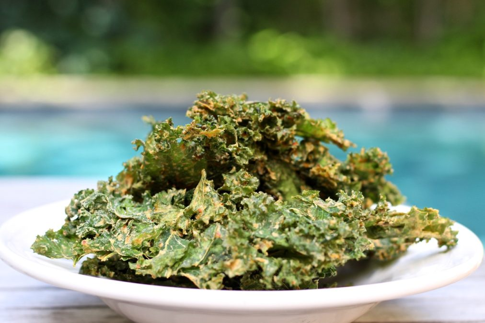
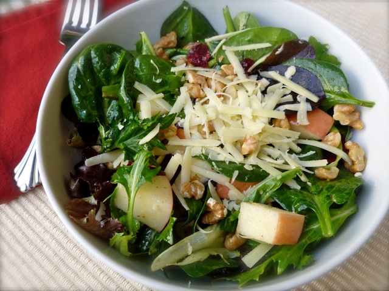
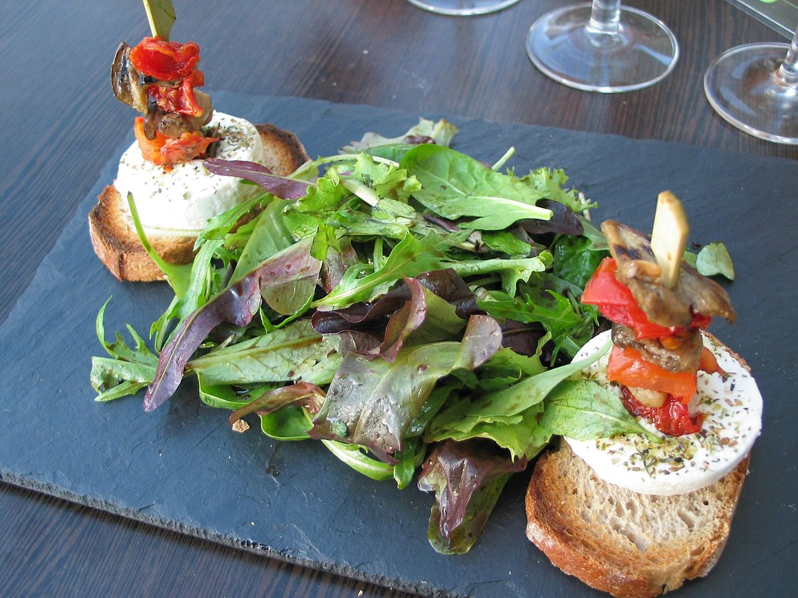
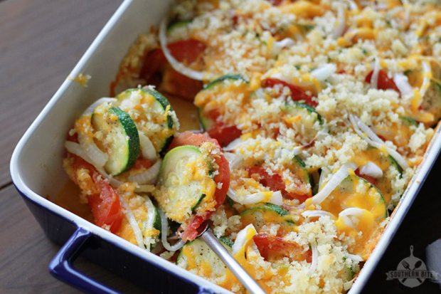
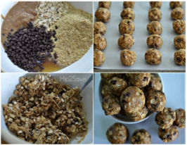

<?xml version="1.0" encoding="utf-8"?>
<!-- generator="Joomla! - Open Source Content Management" -->
<rss version="2.0" xmlns:atom="http://www.w3.org/2005/Atom">
	<channel>
		<title>Recipes</title>
		<description><![CDATA[]]></description>
		<link>http://jump6.com/index.php/health-fitness-and-lifestyle/recipes</link>
		<lastBuildDate>Tue, 08 Jan 2019 18:43:11 +0000</lastBuildDate>
		<generator>Joomla! - Open Source Content Management</generator>
		<atom:link rel="self" type="application/rss+xml" href="http://jump6.com/index.php/health-fitness-and-lifestyle/recipes?format=feed&amp;type=rss"/>
		<language>en-gb</language>
		<item>
			<title>Kale Recipes</title>
			<link>http://jump6.com/index.php/health-fitness-and-lifestyle/recipes/130-kale-recipes</link>
			<guid isPermaLink="true">http://jump6.com/index.php/health-fitness-and-lifestyle/recipes/130-kale-recipes</guid>
			<description><![CDATA[<p><strong>Kale Chips<br /></strong>These is my favorite recipe and trust me, once you&rsquo;ll eat these, you&rsquo;ll forget potato chips.</p>
<p>&nbsp;</p>
]]></description>
			<category>Recipes</category>
			<pubDate>Wed, 12 Jul 2017 15:00:48 +0000</pubDate>
		</item>
		<item>
			<title>Mesclun Mix with Cranberries and Walnuts</title>
			<link>http://jump6.com/index.php/health-fitness-and-lifestyle/recipes/128-mesclun-mix-with-cranberries-and-walnuts</link>
			<guid isPermaLink="true">http://jump6.com/index.php/health-fitness-and-lifestyle/recipes/128-mesclun-mix-with-cranberries-and-walnuts</guid>
			<description><![CDATA[<p>I am going to share with you a wonderful Mesclun Salad recipe which I got it from another Dietitian at the hospital. It tastes delicious and has low calories. It makes a wonderful side dish.</p>
]]></description>
			<category>Recipes</category>
			<pubDate>Wed, 12 Jul 2017 14:50:54 +0000</pubDate>
		</item>
		<item>
			<title>What is Mesclun Salad?</title>
			<link>http://jump6.com/index.php/health-fitness-and-lifestyle/recipes/127-what-is-mesclun-salad</link>
			<guid isPermaLink="true">http://jump6.com/index.php/health-fitness-and-lifestyle/recipes/127-what-is-mesclun-salad</guid>
			<description><![CDATA[<p>Recently I had a few bloggers questioning me about &lsquo;mesclun salad&rsquo;. Seems like this term has suddenly become a trend. Mesclun salad is nothing but simply a salad mix of assorted small, young salad leaves like arugula, endives, spinach, lettuce, Swiss chard, chervil etc. It&rsquo;s basically like &ldquo;Spring Mix&rdquo; which is readily available at the grocery stores. The word &ldquo;Mesclun&rdquo; comes from France which means &ldquo;to mix&rdquo; &ndash; and literally means &ldquo;mixture&rdquo;.</p>
]]></description>
			<category>Recipes</category>
			<pubDate>Wed, 12 Jul 2017 14:47:36 +0000</pubDate>
		</item>
		<item>
			<title>Easy Sides</title>
			<link>http://jump6.com/index.php/health-fitness-and-lifestyle/recipes/121-easy-sides</link>
			<guid isPermaLink="true">http://jump6.com/index.php/health-fitness-and-lifestyle/recipes/121-easy-sides</guid>
			<description><![CDATA[<p><strong>Zucchini bake with tomatoes and Parmesan</strong></p>
<p>&nbsp;</p>
]]></description>
			<category>Recipes</category>
			<pubDate>Fri, 16 Jun 2017 00:59:18 +0000</pubDate>
		</item>
		<item>
			<title>For the Sweet Tooth</title>
			<link>http://jump6.com/index.php/health-fitness-and-lifestyle/recipes/116-for-the-sweet-tooth</link>
			<guid isPermaLink="true">http://jump6.com/index.php/health-fitness-and-lifestyle/recipes/116-for-the-sweet-tooth</guid>
			<description><![CDATA[<h3></h3>
<p class="p1"><span class="s1" style="font-size: 12pt;">Craving something sweet? &nbsp;We have all been there! &nbsp;Try these simple delicious satisfying snacks..low calories but big on taste! &nbsp;Enjoy!</span></p>
<p><span style="font-size: 12pt;"></span></p>
<p>&nbsp;</p>
]]></description>
			<category>Recipes</category>
			<pubDate>Mon, 08 May 2017 14:57:15 +0000</pubDate>
		</item>
	</channel>
</rss>

<!-- Localized -->